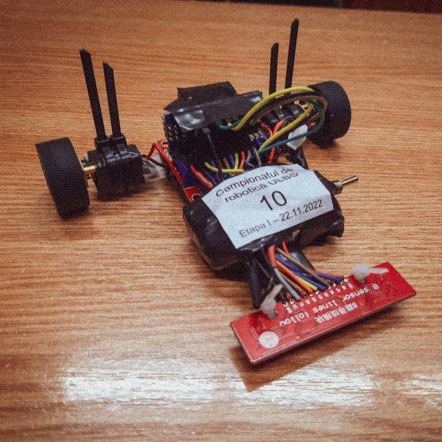

Organised by Marquardt and the Faculty of Engineering from ULBS,the purpose of the competition was assembling and calibrating line follower robots for different tracks. For this,I have gathered a team of four collegues,namely Andrei Șaldorfean,Robert Graur and Cîlnicean Matei.
As part of the Sibiu Innovation Days 2023,Aeroguard is a data gathering and transmiting system. It consists of two levels:one MQ-135 gas sensor,Arduino Nano board,NRF24l01 transciever,DHT11 temperature-humidity sensor that form the hardware part,and the web platform used processing the data. Again,I was part of a team comprised of Andrei Șaldorfean,Iulian Petru and Tudor Stancu.
Part of a collaboration between ULBS(Universitatea Lucian Blaga din Sibiu) and USN(University of South-Eastern Norway), the project served as a introduction into the world of Internet of Things,by presenting challenges faced by the food industry and agriculture,and showing some of the used technologies by them. These technologies include the Arduino platform,neural networks and Petri nets models.
ASC-BMP(from ASCII-BITMAP) represents my project for the Object Oriented Programming course. It's purpose is to take text input from the user, encode it into .bmp files and to decode those image files.